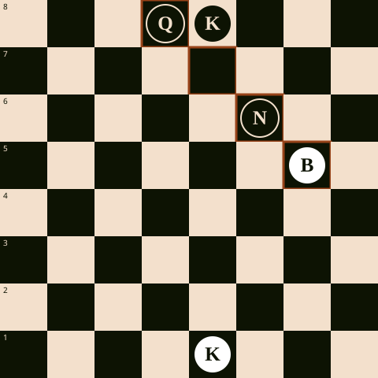

Ajedrez · Lección
La clavada: cómo inmovilizar sin capturar
Una clavada ocurre cuando una pieza de largo alcance —dama, torre o alfil— ataca a una pieza enemiga que no puede moverse sin exponer a otra pieza más valiosa detrás de ella. La pieza clavada queda inmovilizada no porque algo la sujete físicamente, sino porque moverla sería peor que dejarla quieta.
Hay dos tipos. La clavada absoluta inmoviliza una pieza porque detrás está el rey: mover esa pieza sería dejar al propio rey en jaque, y eso ninguna regla lo permite. La clavada relativa inmoviliza una pieza porque detrás hay algo valioso —una dama, una torre— aunque mover la pieza sea legal; simplemente sale caro.
El diagrama siguiente muestra una clavada absoluta construida para ilustrar la idea con la mayor claridad posible.

El caballo en f6 no puede capturar ni alejarse sin dejar la diagonal g5–d8 abierta hacia la dama negra. Aunque técnicamente el caballo sí podría moverse sin poner al rey en jaque directo (la dama no es el rey), hacerlo regalaría la dama al alfil blanco, así que en la práctica el caballo queda tan quieto como si estuviera clavado al rey.
La consecuencia práctica de una clavada casi nunca es "ganar la pieza clavada" de inmediato. Es más sutil: mientras la pieza siga clavada, no defiende, no ataca y no participa del juego. Eso basta para ganar tiempo, sumar más atacantes sobre ella o preparar una jugada que la pieza clavada ya no puede impedir.
Ejemplo de apertura donde surge esta idea: 1. e4 e5 2. Nf3 Nc6 3. Bb5
Aquí el alfil ataca al caballo en c6, pero no es todavía una clavada real: la casilla d7 tiene un peón negro que bloquea la diagonal hacia el rey en e8. Es un error común llamar "clavada" a esta posición inicial de la apertura española; en rigor, es solo una amenaza sobre la diagonal, no una clavada consumada.